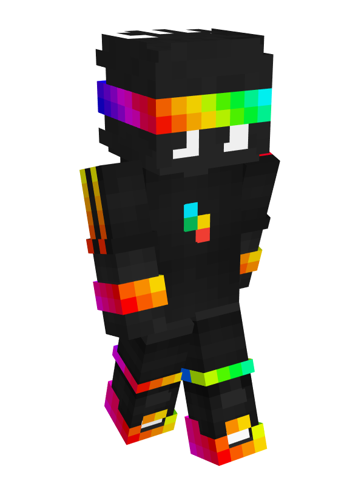
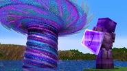

Where were you during the Mafia? We could have wiped them out in a single day with those exploits; Ash would have been nothing! He would have been banned as soon as he tried taking it over but no, you were gone. Aren't you trying to protect this server? Wasn't that your goal?
SpokeIsHere to JamatoP, in My Best Friend Died on the Unstable SMP

Spoke has a very chaotic and manipulative personality. He is shown to ignore the needs or feeling of other in exchange for what he wants, deeming that everything he does is justified and must be accomplished. His egotistical nature is best reflected when he chooses to make an excuse of, underplay or deny his wrongdoings instead of admitting them, often lying even to his best friend about his actions. An example of this is when he killed all the witnesses, made an enormous lie and went all out to hunt down Leow0ok just to cover his accidental burning down of a single village.
He is a good speaker and leader, being the only leader of an empire that did not promise anything to its member, as well as the one who gathered and lead the protagonists to defeat the LAW.
He lost everything, including his signature chestplate Alt, his best friend Mapicc, his teammate JumperWho, his name as the player impossible to catch, and everything in his ender chest, and got captured by JamatoP, due to his being too desperate to kill and debunk JamatoP.
"Dear Players of the UNSTABLE SMP, I, SpokeIsHere, plan to nuke Capital City. You have 1 hour to evacuate the citizens, but whoever tries to stop me will be SWIFTLY eliminated. If you wish to save your home, I have only one demand; prove to me that my best friend, Mapicc, isn't dead. Show me that's he's been at least captured or if he was somewhat alive. Because otherwise, I'll leave this server into RUINS."
Spoke, to the residents of Capital City in My Best Friend Died on the Unstable SMP
How to Destroy the Unstable SMP

"Of course Null wasn't the one going to kill me. Of course Jamato wasn't the one going to kill me. He wanted you to do it. You're going to be the one—you're the one who's going to ban me."
Spoke, to Mapicc in Finding 1000 Missing Minecraft Players
"“If you have an Elytra in you hotbar right now why didn’t you follow him!”"
Spoke, to JumperWho in Minecraft Trapper VS 1000 Players